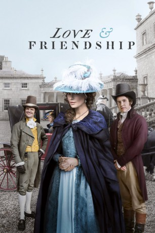

#6187 Love & Friendship
 
 IMDB-Wertung: 6.5 / 10
IMDB-Wertung: 6.5 / 10  Metascore: 0
Metascore: 0 
Die schöne Witwe Lady Susan Vernon besucht das Anwesen ihrer Verwandtschaft, um dort die in der gehobenen Gesellschaft kursierenden, skandalträchtigen Gerüchte über ihre Affären auszusitzen.\r Während sie sich dort versteckt hält, schmiedet sie Pläne, um für sich selbst sowie für ihre heiratsfähige, aber unwillige Tochter Frederica jeweils einen passenden Ehemann zu suchen und dadurch ihrer beider Zukunft zu sichern.\r Lady Susan erregt die Aufmerksamkeit gleich dreier Männer: sowohl des jungen und attraktiven Reginald DeCourcy als auch des reichen, aber etwas einfältigen Sir James Martin sowie des äußerst gut aussehenden, jedoch verheirateten Lord Manwaring. Dieser Umstand verkompliziert die Angelegenheiten deutlich.
Jahr: 2016
Dauer: 93 Minuten
FSK: 0
Land: Irland Studio: KSMTonspuren: DTS - ,
Untertitel:
Auflösung: 1080p (1920x1040) Größe: 6082 MB
Genre: Drama, Komödie, Liebe
Regisseur: Whit Stillman
Drehbuch: Umberto Calosso
Soundtrack:
Darsteller:
 Kate Beckinsale als Lady Susan Vernon
Kate Beckinsale als Lady Susan Vernon Morfydd Clark als Frederica Vernon
Morfydd Clark als Frederica Vernon Tom Bennett als Sir James Martin
Tom Bennett als Sir James Martin Jenn Murray als Lady Lucy Manwaring
Jenn Murray als Lady Lucy Manwaring Lochlann O'Mearáin als Lord Manwaring
Lochlann O'Mearáin als Lord Manwaring- Sophie Radermacher als Miss Maria Manwaring
 Chloë Sevigny als Alicia Johnson
Chloë Sevigny als Alicia Johnson Stephen Fry als Mr. Johnson
Stephen Fry als Mr. Johnson- Jordan Waller als Edward, Head Footman
- Ross Mac Mahon als Owen
- Frank Prendergast als Approaching Gentleman
 Xavier Samuel als Reginald DeCourcy
Xavier Samuel als Reginald DeCourcy- Emma Greenwell als Catherine DeCourcy Vernon
 Justin Edwards als Charles Vernon
Justin Edwards als Charles Vernon- Kelly Campbell als Mrs. Cross
- Conor Lambert als Wilson The Butler
 Conor MacNeill als The Young Curate
Conor MacNeill als The Young Curate- Jemma Redgrave als Lady DeCourcy
 James Fleet als Sir Reginald DeCourcy
James Fleet als Sir Reginald DeCourcy- Frank Melia als Coachman
- Sylvie Benoiton als Vernon Child
- Daniel Magee als Vernon Child
- Rowan Finken als Footman
- David Timbs als Footman
- Laura Whelan als Maid
- James Crerar als Footman
- John Brennan als Footman
- Olivia Fahy als Maid
- Ellie Houlihan als Maid
- Carla McGlynn als Maid
Datei: X:\2016(G-M)\Love & Friendship (2016, FSK0, 1920x1040).mkv seit 11.05.2017
Festplatte: HD 2016(A-Z)
 Es gibt insgesamt 164 Filme in der Gruppe '2016(G-M)'
Es gibt insgesamt 164 Filme in der Gruppe '2016(G-M)'